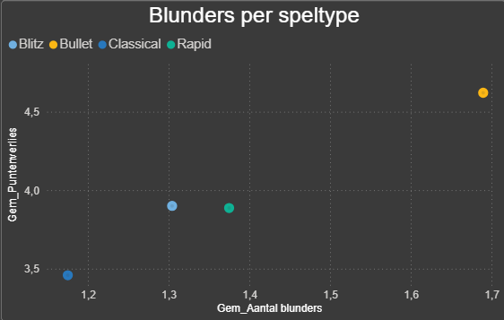
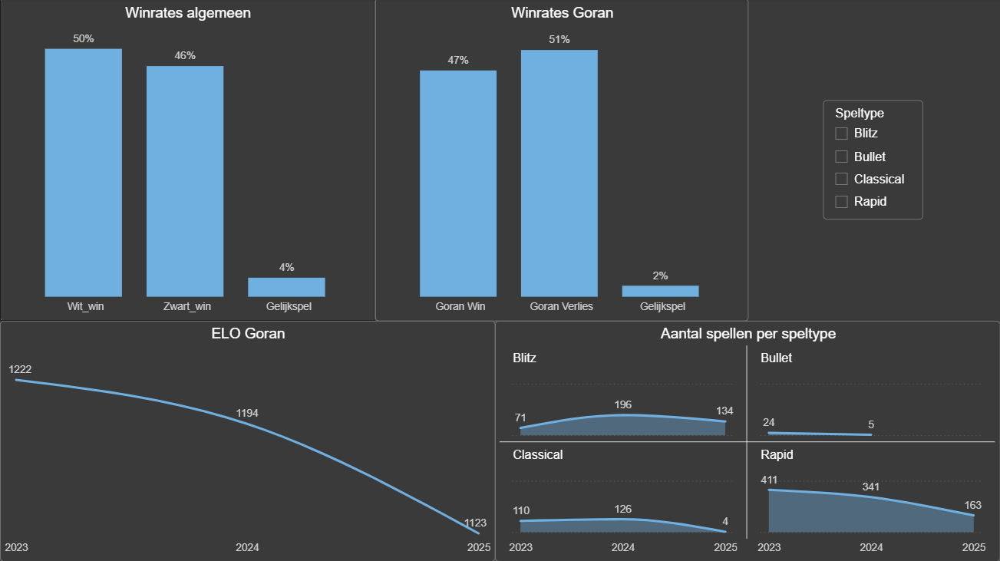
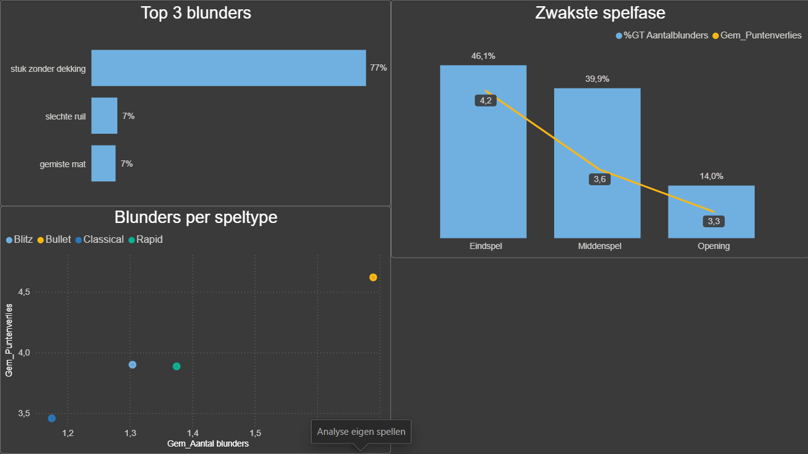
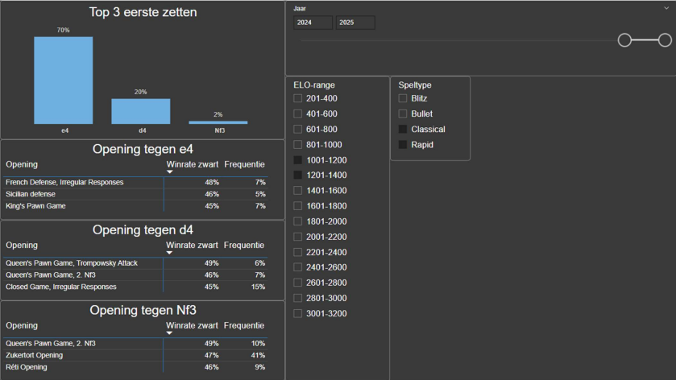
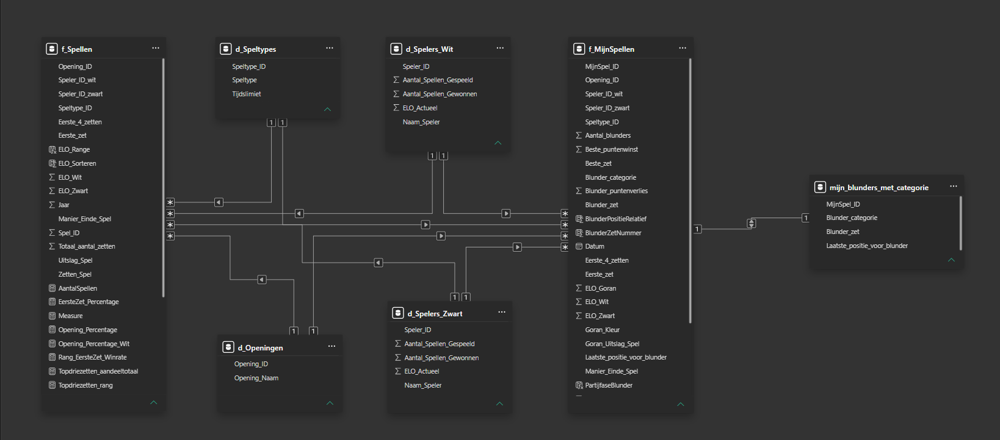

Praktische oplossingen voor slimmer werk.
Ik automatiseer repetitieve administratieve taken, optimaliseer processen en breng structuur in grote hoeveelheden data. Daarnaast kan ik die data ook analyseren en visualiseren om tot bruikbare inzichten te komen. Hieronder enkele realisaties.
Projecten
PUR Tool – Excel/VBA-automatisering
Automatisering van complexe berekeningen, controles en outputflows binnen een administratief proces.
PUR Database – Access-datamodel
Relationele database voor dossiers, afspraken, historiek, importcontrole en rapportering.
OWOW – MS365 & SharePoint-adoptie
Structuur, begeleiding en praktische toepassing bij de overgang naar een gestandaardiseerde MS365-werkwijze.

Verbeter je schaakspel met data: Een persoonlijke case study.
Data-analyseproject rond schaakprestaties, opgebouwd met een eigen database en Power BI-rapport.
Analyse van data-vacatures
Toekomstig portfolio-project rond gevraagde skills, functietitels en regio’s binnen data-gerelateerde jobs.
PUR Tool – Excel/VBA-automatisering
Een Excel/VBA-tool om een complex administratief berekeningsproces te standaardiseren, automatiseren en controleerbaarder te maken.
Case study
Context. Het oorspronkelijke proces bevatte veel manuele stappen, verspreide bestanden en herhaalbare berekeningen.
Mijn rol. Ik analyseerde de werkwijze, bouwde automatiseringslogica in VBA en werkte aan een herbruikbare structuur voor meerdere leveranciersscenario’s.
Oplossing. De tool combineert inputbestanden, draaitabellen, controles, templates en gegenereerde outputbestanden in één gestroomlijnde flow.
Resultaat. Minder manuele handelingen, consistenter resultaat en een betere basis voor verdere rapportering.
PUR Database – Access-datamodel
Een relationele database voor het gestructureerd beheren van dossiers, afspraken, masterdata, historiek en controleprocessen.
Case study
Context. Belangrijke afspraken en opvolging zaten verspreid over bestanden, waardoor controle en rapportering moeilijker werden.
Mijn rol. Ik werkte het datamodel, de validatieregels, historieklogica en toekomstige import-/rapportageflows uit.
Oplossing. De database centraliseert dossiers, afspraken, leveranciers, klanten en opvolging in een relationele structuur.
Resultaat. Betere datakwaliteit, meer traceerbaarheid en een fundament voor Power Query/Power Pivot-rapportering.
OWOW – MS365 & SharePoint-adoptie
Bijdrage aan een gestandaardiseerde manier van werken met Microsoft 365, met focus op praktische toepasbaarheid voor een administratief team.
Case study
Context. De organisatie evolueert van klassieke opslag en werkwijzen naar een meer cloudgerichte MS365-omgeving.
Mijn rol. Ik fungeerde als aanspreekpunt voor mijn team, dacht mee over structuur en vertaalde de verandering naar praktische afspraken.
Oplossing. Een duidelijke SharePoint-structuur, afspraken rond Teams/OneDrive/Outlook en begeleiding voor eindgebruikers.
Resultaat. Betere voorbereiding op cloud-adoptie, minder verwarring rond opslaglocaties en meer uniforme samenwerking.
Verbeter je schaakspel met data: Een persoonlijke case study.
Een persoonlijk data-analyseproject waarin schaakpartijen werden gestructureerd, gemodelleerd en gevisualiseerd in Power BI.
Case study
Context. Tijdens mijn opleiding data-analyse werkte ik aan een persoonlijk project rond schaakprestaties. Het doel was om eigen partijen niet alleen individueel te bekijken, maar structureel te analyseren op basis van data.
Mijn rol. Ik bouwde een database from scratch, ontwierp het datamodel en maakte een Power BI-rapport om patronen in resultaten, openingen en prestaties zichtbaar te maken.
Oplossing. De gegevens werden gestructureerd in tabellen en relaties, waarna Power BI werd gebruikt voor visualisaties en analysevragen.
Resultaat. Het project toont hoe ruwe of verspreide informatie kan worden omgezet naar een analyseerbaar datamodel en een visueel rapport.




Analyse van data-vacatures
Een toekomstig portfolio-project rond data-gerelateerde vacatures, gevraagde skills, functietitels en regio’s.
Case study
Context. Dit project onderzoekt welke skills en functietitels vaak terugkomen in data-gerelateerde vacatures.
Mijn rol. Dataset samenstellen, data opschonen, categoriseren en visualiseren in een dashboard.
Oplossing. Analyse van functietitels, tools, regio’s en vereiste vaardigheden.
Status. Project nog te bouwen. Deze pagina dient voorlopig als placeholder.